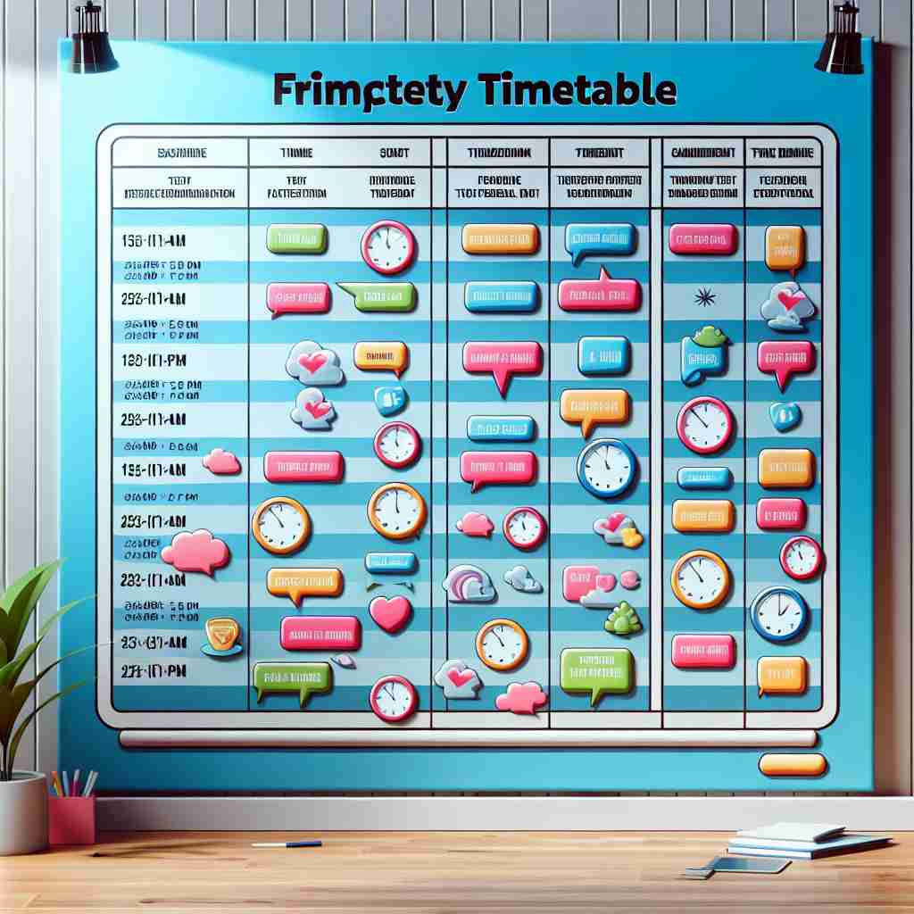
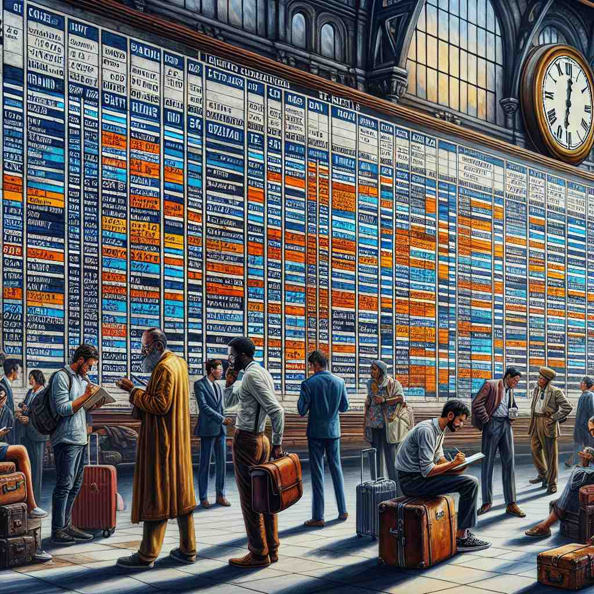
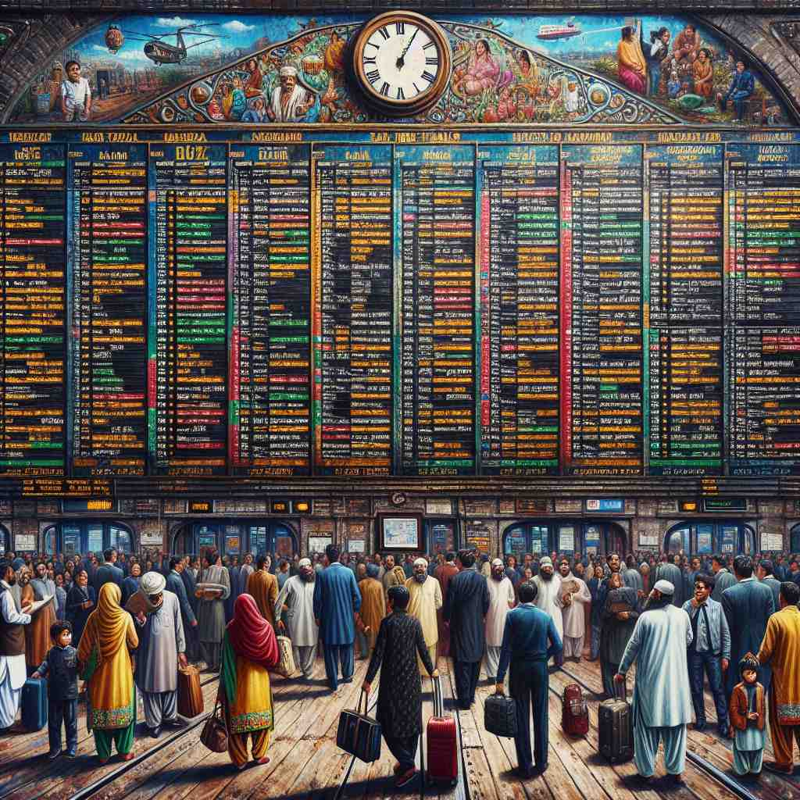

💬 Students need to check the timetable for their classes. 学生需要查看他们课程的时间表。

💬 The teacher checks the class timetable for this week's lessons. 老师查看本周课程表。

💬 The passengers are in a hurry to check the timetable for their trains. 乘客们急忙查看他们的火车时刻表。

💬 Passengers need to check the timetable before their journey. 乘客在旅行前需要查看时刻表。
🧠 想象一个表格，上面列出了各种事件及其发生的时间。这就是'timetable'的核心含义。无论是课程安排、交通时刻表还是项目计划，都可以用这个mental image来理解。记住这个基本图像，就能轻松掌握'timetable'的各种用法。
🔈 ['taɪmteɪb(ə)l]
🗝️ n. a chart showing the times at which certain events are scheduled to take place 一张显示某些事件安排时间的图表
🎭 在一个学校走廊里，学生们聚集在一块公告板前，认真地查看每周的课程表。课程表上清晰地列出了每节课的时间和教室位置，使每个学生都能按时到达课堂。这展示了'timetable'作为事件时间表的含义。
💬 The students received their class timetables for the new semester. 学生们收到了新学期的课表。
🌳 由词根 "time"（时间）和后缀 "-table" 组成，指的是安排时间的表格或计划。
🕸️ 1. timeline: 时间线 2. timeless: 永恒的 3. timer: 计时器
💡 记忆 "timetable" 时，可以联想到 "time" 和 "table" 的结合，如同桌子上放置的时间计划表，帮助安排每天的时间。